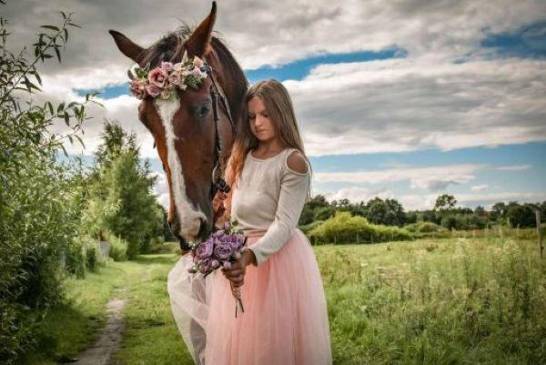
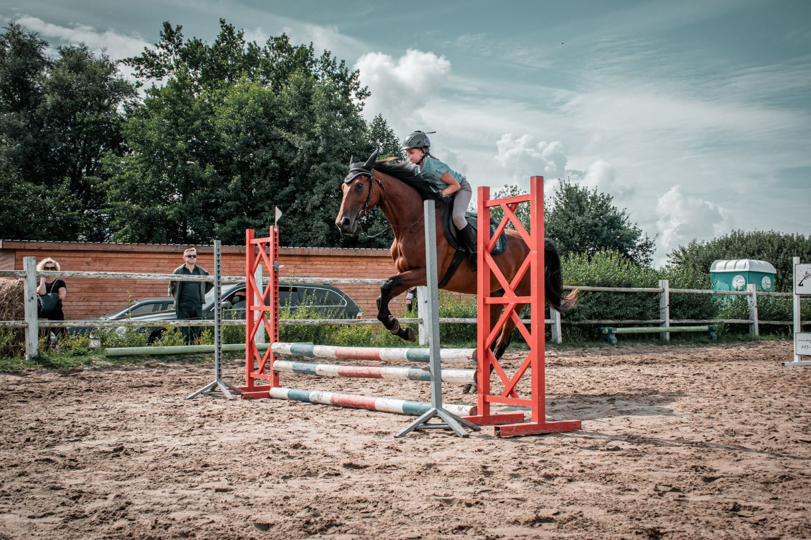
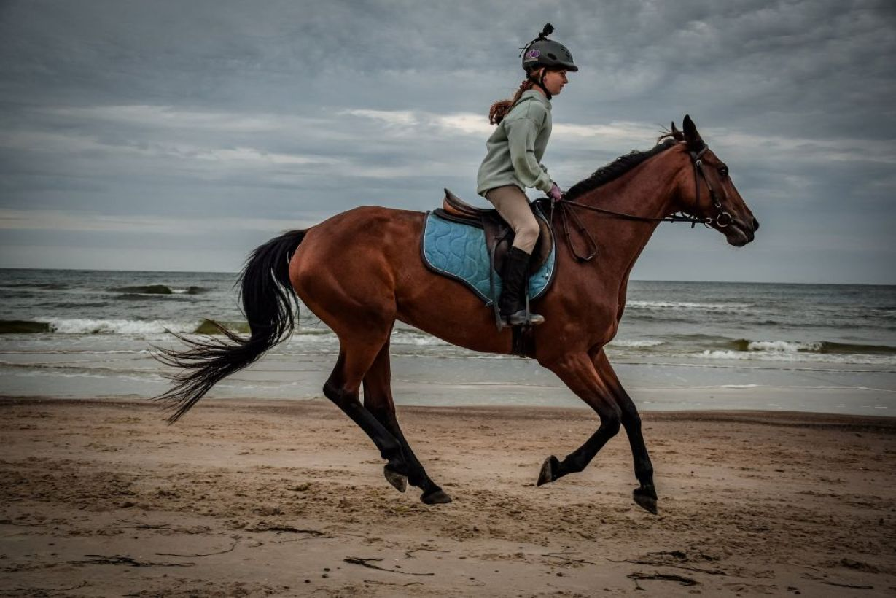

Jazda konna to jedna z najstarszych i najbardziej szlachetnych form aktywności człowieka. Od wieków konie towarzyszyły ludziom w pracy, na polach bitew, a także w czasie rozrywki i wypoczynku. Dziś jazda konna to sport, który łączy tradycję z nowoczesnością, pozwalając nie tylko na doskonalenie umiejętności fizycznych, ale także na budowanie wyjątkowej więzi z naturą i zwierzęciem. Każda chwila spędzona w siodle to lekcja cierpliwości, pokory i współpracy.
jak zapewne już widzieliście w telewizji czy na telefonach, są różne dyscypliny i rodzaje jazdy. wyróżniające się i najbardziej znane, po koleji to; Skoki przez przeszkody, ujeżdżenie, woltyżerka (akrobacje), cross (skoki przez naturalne przeszkody, najczęściej jakieś kłody na wysokości, woda czy płoty z trawy), następne może być powożenie, czyli jazda z bryczką czy western. Tutaj można skończyć nawet na pokazach czy licytacji. Więc dyscyplin jest mnóstwo a każda z nich uczy cierpliwości i wymaga dużo pracy, jak i z sobą tak i z koniem.
Oto definicje najczęściej użwyanych słów, których często nie rozumiemy w dyscyplinach
Ujeżdżenie - to klasyczna forma jazdy, która skupia się na precyzji ruchów konia i harmonii między nim a jeźdźcem.
Skoki przez przeszkody - dynamiczna i emocjonująca dyscyplina, w której konie pokonują różnorodne przeszkody na torze.
Western - styl inspirowany jazdą kowbojską, popularny zwłaszcza w Stanach Zjednoczonych, charakteryzuje się swobodą i dużym komfortem dla konia i jeźdźca.
teren - jazda w plenerze, najczęściej w lasach, polach czy górach, pozwala na kontakt z naturą i odpoczynek od miejskiego zgiełku.
Zacznijmy od tego, co to jest PZJ? PZJ inaczej Polski Związek Jeździecki jest to organizacja zrzeszająca zawodnikó,trenerów,sędziów i działaczy poslkiego jeżdziectwa.
W Polsce istnieje system odznak jeździeckich, które są potwierdzeniem umiejętności jeźdźca. Pierwszym krokiem jest zdobycie odznaki Jeżdżę Konno, która wymaga umiejętności osiodłania konia, podstawowej anatomi oraz podstawowych chodów. Kolejną do zdania mamy Brązową Odznakę Jeździecką, która wymaga opanowania podstaw jazdy oraz wiedzy teoretycznej o koniach. Następnie można przystąpić do egzaminu na Srebrną Odznakę, który jest bardziej wymagający i skupia się na wyższych umiejętnościach jeździeckich, takich jak skoki przez przeszkody. Ostatnim etapem jest Złota Odznaka, która świadczy o profesjonalnym poziomie jeździeckim. Zdobywanie odznak to świetna motywacja do rozwijania swoich umiejętności i pogłębiania wiedzy.
Jazda konna to nie tylko sport, ale również terapia. Regularna aktywność w siodle wzmacnia mięśnie głębokie, poprawia postawę ciała i równowagę. Jest to szczególnie korzystne dla osób z problemami kręgosłupa lub słabą koordynacją. Ponadto kontakt z końmi działa kojąco na układ nerwowy – obniża poziom stresu, poprawia nastrój i uczy cierpliwości. Właśnie dlatego jazda konna często wykorzystywana jest w hipoterapii, pomagając osobom z różnymi schorzeniami zarówno fizycznymi, jak i psychicznymi.
chcesz się dowiedzieć więcej o przygotowaniach do jazdy konnej? sprawdź szczegóły o odpowiednim stroju.,
Konie są niezwykle społecznymi zwierzętami, które porozumiewają się głównie za pomocą mowy ciała i dźwięków. Podnoszenie uszu, trzepanie ogonem czy określona postawa ciała mogą wyrażać ciekawość, złość lub strach. Jednym z najbardziej rozczulających zachowań jest tzw. „przyjacielskie obwąchiwanie”, podczas którego konie delikatnie dotykają się nosami. Co ciekawe, konie potrafią „śmiać się” – otwierają pyski i unoszą górną wargę, co nazywa się reakcją Flehmena. To sposób na lepsze wyczucie zapachów w powietrzu!
Końskie kopyta są jak paznokcie. Kopyto jest zbudowane z keratyny, tej samej substancji, która tworzy ludzkie paznokcie. Dlatego tak ważne jest ich regularne pielęgnowanie!
Konie śpią na stojąco. Dzięki specjalnej budowie nóg mogą blokować stawy, co pozwala im odpoczywać bez ryzyka przewrócenia się. Jednak konie potrzebują także kilku godzin snu w pozycji leżącej, by zregenerować się w pełni
Konie potrafią odczuwać emocje podobne do ludzkich, takie jak radość, smutek czy strach. Badania wykazały, że rozpoznają emocje po wyrazie twarzy człowieka i tonie jego głosu. Jeśli jesteś zestresowany, Twój koń to zauważy i może również poczuć się niespokojny.
Jak dbać o konia? Właściciele koni wiedzą, że codzienna opieka to nie tylko karmienie i czyszczenie stajni. Konie potrzebują także regularnych wizyt kowala, kontroli stomatologicznych oraz odpowiedniego planu treningowego. Odpowiednio dobrana dieta, bogata w paszę, siano i witaminy, jest kluczem do zdrowia konia.
Sztuka hodowli Hodowla koni to prawdziwa sztuka. Najbardziej prestiżowe stajnie na świecie dbają o to, by konie były nie tylko piękne, ale także charakteryzowały się wytrzymałością i wyjątkowym charakterem. Ciekawostką jest fakt, że konie arabskie mają dodatkowe żebro mniej niż inne rasy, co sprawia, że są bardziej zwrotne i zwinne.
Historia koni i ich rola w rozwoju cywilizacji Konie odegrały kluczową rolę w historii ludzkości. Od czasów prehistorycznych, kiedy były łowione jako zwierzęta dzikie, aż po współczesne zawody sportowe, ich znaczenie niezmiennie rosło. Pierwsze udokumentowane udomowienie koni miało miejsce około 4000 lat p.n.e. na terenach dzisiejszego Kazachstanu. Dzięki temu ludzie zyskali nie tylko nowy środek transportu, ale także wsparcie w polowaniach i rolnictwie. W starożytności konie były symbolem statusu. Rzymskie rydwany, rycerze na bojowych rumakach czy imponujące araby w armiach wschodnich stały się obrazem potęgi i bogactwa. W średniowieczu konie bojowe były specjalnie hodowane, by mogły unieść ciężkozbrojnych rycerzy – te konie określa się jako destriery.
Siano to podstawa, którą konie jedzą kilka razy dziennie.
Owies i pasze treściwedostarczają energii, szczególnie dla koni pracujących.
Dodatki witaminowepomagają utrzymać zdrową kondycję sierści i kopyt.
Dostarczanie wodyŚwieża woda musi być dostępna przez całą dobę. Koń pije od 20 do 40 litrów wody dziennie, a podczas upałów czy intensywnej pracy nawet więcej.